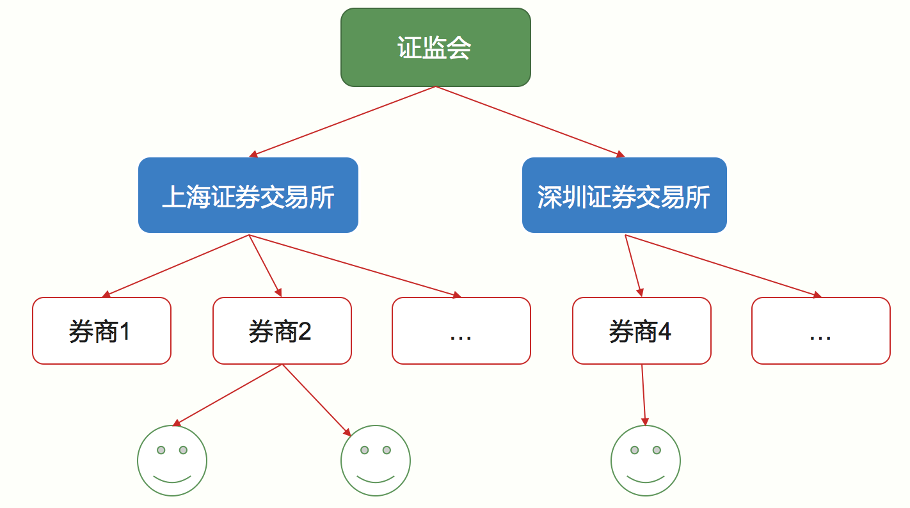
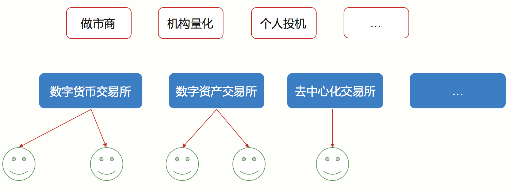

- 00 开篇词 帮你从0到1深入学习区块链技术.md.html
- 尾声篇 授人以鱼，不如授人以渔.md.html
- 新书首发《区块链第一课：深入浅出技术与应用》.md.html
- 第01讲 到底什么才是区块链？.md.html
- 第02讲 区块链到底是怎么运行的？.md.html
- 第03讲 浅说区块链共识机制.md.html
- 第04讲 区块链的应用类型.md.html
- 第05讲 如何理解数字货币？它与区块链又是什么样的关系？.md.html
- 第06讲 理解区块链之前，先上手体验一把数字货币.md.html
- 第07讲 区块链的常见误区.md.html
- 第08讲 最主流区块链项目有哪些？.md.html
- 第09讲 深入区块链技术（一）：技术基础.md.html
- 第10讲 深入区块链技术（二）：P2P网络.md.html
- 第11讲 深入区块链技术（三）：共识算法与分布式一致性算法.md.html
- 第12讲 深入区块链技术（四）：PoW共识.md.html
- 第13讲 深入区块链技术（五）：PoS共识机制.md.html
- 第14讲 深入区块链技术（六）：DPoS共识机制.md.html
- 第15讲 深入区块链技术（七）：哈希与加密算法.md.html
- 第16讲 深入区块链技术（八）： UTXO与普通账户模型.md.html
- 第17讲 去中心化与区块链交易性能.md.html
- 第18讲 智能合约与以太坊.md.html
- 第19讲 上手搭建一条自己的智能合约.md.html
- 第20讲 区块链项目详解：比特股BTS.md.html
- 第21讲 引人瞩目的区块链项目：EOS、IOTA、Cardano.md.html
- 第22讲 国内区块链项目技术一览.md.html
- 第23讲 联盟链和它的困境.md.html
- 第24讲 比特币专题（一）历史与货币.md.html
- 第25讲 比特币专题（二）：扩容之争、IFO与链上治理.md.html
- 第26讲 数字货币和数字资产.md.html
- 第27讲 弄懂数字货币交易平台（一）.md.html
- 第28讲 弄懂数字货币交易平台（二）.md.html
- 第29讲 互联网身份与区块链数字身份.md.html
- 第30讲 区块链即服务BaaS.md.html
- 第31讲 数字货币钱包服务.md.html
- 第32讲 区块链与供应链（一）.md.html
- 第33讲 区块链与供应链（二）.md.html
- 第34讲 从业区块链需要了解什么？.md.html
- 第35讲 搭建你的迷你区块链（设计篇 ）.md.html
- 第36讲 搭建你的迷你区块链（实践篇）.md.html
- 捐赠
第27讲 弄懂数字货币交易平台（一）
在前面的文章中，我向你介绍了数字货币交易平台如何操作。
可以这么说，如果没有数字货币交易所，就没有今天繁荣的数字货币市场，区块链技术也不会这样被广为人知。
交易的两种模式
先来说说交易模式，交易模式分为两种：场内交易和场外交易。
- 场内交易，又称成交单优先模式，指的是有交易场所将买卖双方聚集在一起，进行竞价交易的交易方式。这种交易方式中，交易场所负责用户的资产托管、交易撮合、资产结算、履约担保等功能。
- 场外交易，又称报价单优先模式，指的是买卖方不通过第三方而直接成为交易对手的交易方式。
本文介绍的交易所主要是第一种交易模式，即场内交易模式。
传统交易所的运作流程
区块链领域的交易所与传统金融的结构十分相似，但也存在了一些区别，为了讲清楚这种区别，我先简述一下证券交易的结构。
传统一般有四种角色，分别是投资者，在国内大部分是散户，其次是证券公司，接着是交易场所，这里的交易场所仅指场内交易场所，最后是证监会。它们的关系如下图。

通常投资者在证券公司开户，然后投资者委托证券公司下单，证券公司接受投资者下单并收取一定的佣金，然后买卖单由证券公司在交易场所进行交易，这个过程叫做委托，投资者是委托者，证券公司是受托者。
换句话说，普通投资者是无法直接接触交易所的，这是因为交易所采取会员制，只有成为交易所的会员且有交易席位，才可以接收其他投资者的委托，所以这就限定了机构投资者，也就是证券公司了。
而这里交易所是非盈利性的事业法人，它接受国家证券主管机关证券委员会及证监会的领导、管理和监督。证券交易所本身并不参与证券交易，不能决定证券价格。
所以对于投资者来说，只和证券公司有直接联系，这里的流程可以简述为：
- 投资者到证券公司开户，然后下单给证券公司；
- 证券公司再将这些订单传递到交易所，订单在交易所完成撮合成交；
- 接着交易所将订单和成交数据传到证券登记结算公司，结算公司据此进行资金和证券账户的结算；
- 结算结果再回传给证券公司，证券公司通过自己的平台显示给投资者，例如成交信息，账户余额等等。
数字资产交易平台
数字货币交易平台也叫做数字资产交易平台，主要为人们提供交易数字货币或数字资产撮合交易服务。
这种交易市场是一种典型的买单、卖单交易市场，所以这些平台以场内交易为主，通过提供买单卖单的撮合服务然后赚取手续费，这个过程中也发展出了层次丰富的金融工具，例如杠杆交易。

人们提供了买、卖交易数字资产的过程，这个过程是一种数字货币交换到另外一种数字货币的过程。
这种交易市场通常是数字货币对数字货币的，当然这显然不够，所以这就催生了法币对数字货币的交易，这也是中心化交易平台的由来，目前流行的法币与数字货币的交易有美元、欧元、日元、澳元等。
目前市场上，中心化的交易平台占据了绝大部分。从功能上来看，中心化交易所一般都会提供以下业务模块：充提数字货币、资产托管、交易撮合、资产结算、杠杆交易、KYC等。
上面我们介绍过传统交易平台的结构，借此我们也可以归纳比较出数字货币平台的与传统交易平台的优劣势。
传统交易所依赖券商，属于金字塔型结构，用户聚集在券商处，资金托管在银行，证券登记结算在第三方机构，本质上交易场所只提供了撮合、监管辅助、信息辅助等功能。
而由于数字货币的去中心化特性，数字货币交易平台属于扁平型结构，资产管理本身就内置在交易所内部。
所以任何一个交易平台都不需要第三方机构登记结算数字货币，这带来了业务架构上的易部署特性，用户流量和资金流量最终全部汇聚在数字货币交易所。
如果我们从这些业务模块出发，结合技术架构来看，中心化的数字货币交易平台更接近互联网应用的技术架构，它本质上是金融交易系统与互联网网络服务相结合，具有以下优势特性：
- 能够支持海量高并发实时撮合交易;
- 用户终端全平台支持，从桌面到移动端不一而足;
- 数字资产的超高流动性；
- 平台可以获取超高的利润；
- 价值发现功能。
虽然利润和流量都超大，但中心化交易平台也面临了一些天花板，例如动不动就被爆出被黑事件，这也着实让用户提心吊胆，所以我归纳了一些如下缺点：
- 内幕操作，交易所相当于是一个黑盒，内部操作不透明带来了巨大风险；
- 监管缺失，信息披露不完善，项目方跑路风险；
- 持仓风险，用户的资金完全托管在交易所；
- 趋利优先，区块链本身的发展是在盈利之后才会被考虑的；
- 交易所破产倒闭风险。
总的来说，数字货币交易所目前是区块链与现实的接触面最大的接触点，也是数字金融中的最重要一环。
数字货币交易平台的三种类型
其实在数字货币交易领域，交易平台是不必局限在中心化这一种实现方案的，这由于交易所也是由很多业务模块组成的，它是把某些模块进行去中心化，而不是整体去中心化，所以实际上它可以有三种实现类型。
- 模式一：中心化模式，资金管理系统与区块链账本各自记账，包含充币提币的过程，需要人工干涉。模式一的代表有很多，现在市场上主流的交易所主要的有Binance、Bittrex、Bitfinex、Gate.io、Huobi.pro、Okex、Kraken等，它们为数字货币和数字资产的发展提供了全球化、7*24小时不间断的流动性，也就是上文我们介绍的数字货币交易平台。
- 模式二：半中心化模式，交易撮合与行情模块是中心化的，而资产是在区块链上直接结算的。代表有0x Project、Keyber Network这些前沿的项目。
- 模式三：完全去中心化模式 ，比模式二更进一步，所有模块都是去中心化的，包括交易撮合和行情部分。代表有比特股和EtherDelta。
模式二和模式三我们统称为去中心化交易所，目前是区块链数字资产领域研究的一个前沿方向，多数方案都还不成熟，例如用户产品体验差、稳定性不足、数字货币流动性不足等等，当然更多还处于研发阶段。
虽然去中心化交易所是一个很好的方向，但可能会脱离掉用户的真实需求，正如我前面谈论“去中心化”这个概念所说，终端用户也许根本不关心平台是否是去中心化的。在这里，用户的主要诉求体现在下面几点：
- 用户终端产品的界面操作流畅、响应速度快、用户体验好；
- 资产结算速度快，如果存在充币提币的话取决于审核过程；
- 订单簿挂单的深度要好，可以快速成交订单；
- 托管的资产安全性高，如果有的话。
以上四点，目前模式一的交易平台的体验完胜模式二和模式三，这也是中心化交易平台流行的主要原因。
总结
数字资产交易平台一方面是互联网技术与区块链结合的典型案例，另一方面也是数字金融生态最重要的一环，区别于传统金融的券商结构，交易所本身的资产托管结构，让数字金融具备天然的流动性，这是传统金融体系所不具有的特性。
本篇给你介绍数字货币交易所，也是希望你了解交易所在数字金融中的地位，同时为你打开思路。好了，今天留给你的问题是，监管会会接纳数字货币交易所这种形式的交易体系吗？你可以给我留言，我们一起讨论。感谢你的收听，我们下期再见。
© 2019 - 2023 Liangliang Lee. Powered by gin and hexo-theme-book.